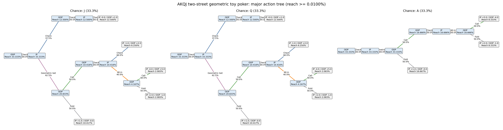
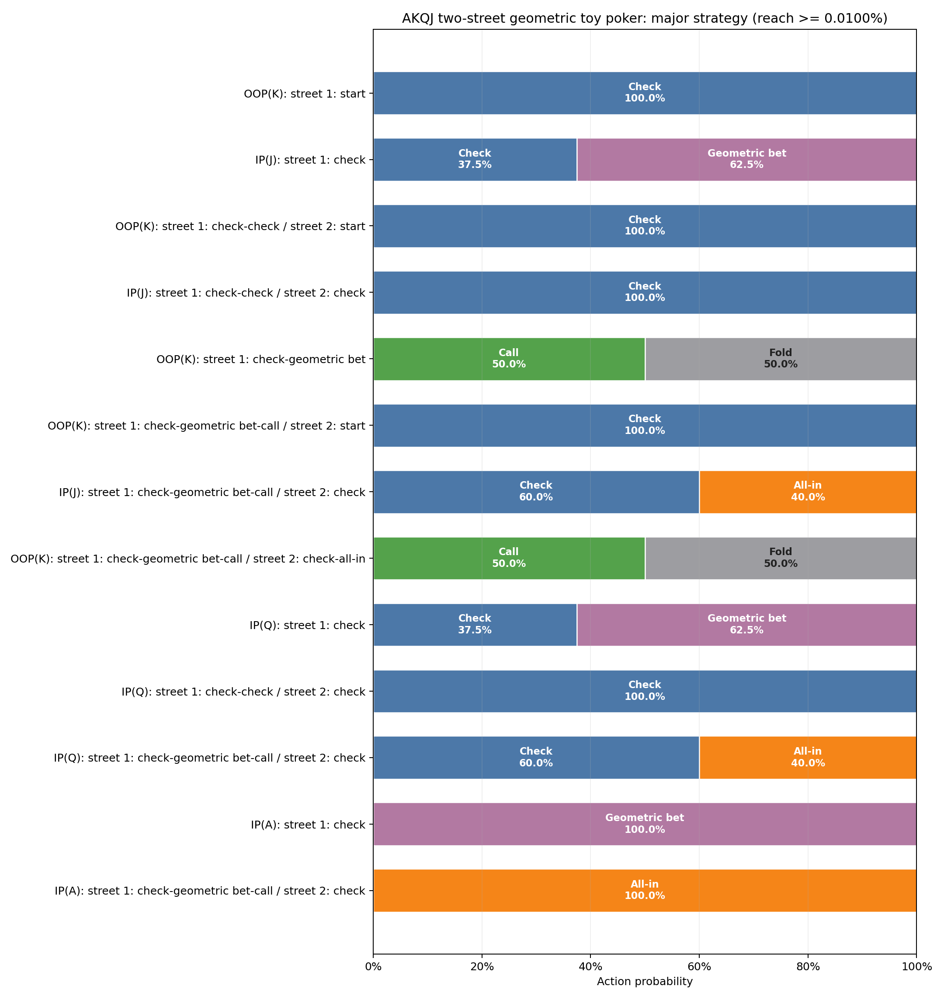
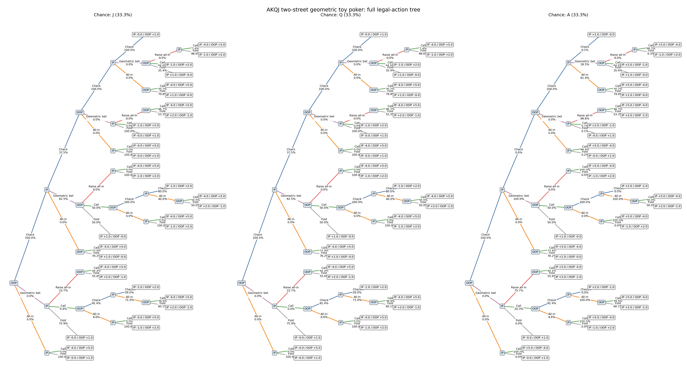
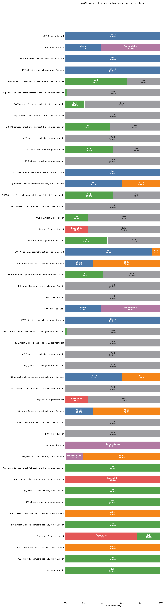
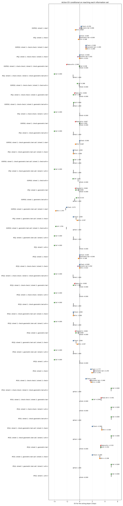
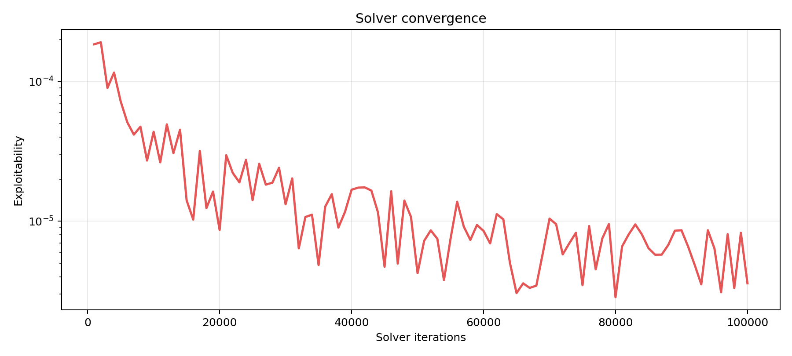

各情報集合へ到達した条件下で、手番プレイヤーの利得EVをchips単位で表示します。 初期potはデッドマネーとして扱います。このゲームの終端利得合計は 1です。
Solver backend: native_efg;
algorithm: cfr_plus;
checkpoint evaluation: native_efg.
Stop reason: max_iterations;
target exploitability: nan;
best checkpoint: 3.5914e-06
at iteration 100,000.
Information sets and tree nodes with reach probability below 0.0100% are omitted here. Showing 13 of 48 information sets. All actions at a retained information set remain visible.


| Decision | Reach | Strategy | Policy EV | Action EV |
|---|---|---|---|---|
| OOP(K): street 1: start street=1, pot=1, ip_committed=0, oop_committed=0 | 100.000000% | Check: 100.00% Geometric bet: 0.00% All-in: 0.00% | +0.250000 | Check: +0.250000 Geometric bet: -0.005780 All-in: -0.666667 |
| IP(J): street 1: check street=1, pot=1, ip_committed=0, oop_committed=0 | 33.333333% | Check: 37.50% Geometric bet: 62.50% All-in: 0.00% | +0.000012 | Check: -0.000000 Geometric bet: +0.000019 All-in: -0.188330 |
| OOP(K): street 1: check-check / street 2: start street=2, pot=1, ip_committed=0, oop_committed=0 | 25.000199% | Check: 100.00% Geometric bet: 0.00% All-in: 0.00% | +1.000000 | Check: +1.000000 Geometric bet: +1.000000 All-in: +1.000000 |
| IP(J): street 1: check-check / street 2: check street=2, pot=1, ip_committed=0, oop_committed=0 | 12.500099% | Check: 100.00% Geometric bet: 0.00% All-in: 0.00% | -0.000000 | Check: +0.000000 Geometric bet: -0.292479 All-in: -0.009904 |
| OOP(K): street 1: check-geometric bet street=1, pot=2, ip_committed=1, oop_committed=0 | 74.999800% | Raise all-in: 0.00% Call: 50.00% Fold: 50.00% | -0.000003 | Raise all-in: -0.666674 Call: -0.000005 Fold: +0.000000 |
| OOP(K): street 1: check-geometric bet-call / street 2: start street=2, pot=3, ip_committed=1, oop_committed=1 | 37.499162% | Check: 100.00% All-in: 0.00% | -0.000005 | Check: -0.000005 All-in: -0.666674 |
| IP(J): street 1: check-geometric bet-call / street 2: check street=2, pot=3, ip_committed=1, oop_committed=1 | 10.416412% | Check: 60.00% All-in: 40.00% | -1.000001 | Check: -1.000000 All-in: -1.000003 |
| OOP(K): street 1: check-geometric bet-call / street 2: check-all-in street=2, pot=6, ip_committed=4, oop_committed=1 | 24.999513% | Call: 50.00% Fold: 50.00% | -0.999999 | Call: -0.999999 Fold: -1.000000 |
| IP(Q): street 1: check street=1, pot=1, ip_committed=0, oop_committed=0 | 33.333333% | Check: 37.50% Geometric bet: 62.50% All-in: 0.00% | +0.000012 | Check: -0.000000 Geometric bet: +0.000019 All-in: -0.188330 |
| IP(Q): street 1: check-check / street 2: check street=2, pot=1, ip_committed=0, oop_committed=0 | 12.500099% | Check: 100.00% Geometric bet: 0.00% All-in: 0.00% | -0.000000 | Check: +0.000000 Geometric bet: -0.292479 All-in: -0.009904 |
| IP(Q): street 1: check-geometric bet-call / street 2: check street=2, pot=3, ip_committed=1, oop_committed=1 | 10.416412% | Check: 60.00% All-in: 40.00% | -1.000001 | Check: -1.000000 All-in: -1.000003 |
| IP(A): street 1: check street=1, pot=1, ip_committed=0, oop_committed=0 | 33.333333% | Check: 0.00% Geometric bet: 100.00% All-in: 0.00% | +2.249976 | Check: +1.776998 Geometric bet: +2.249976 All-in: +1.950664 |
| IP(A): street 1: check-geometric bet-call / street 2: check street=2, pot=3, ip_committed=1, oop_committed=1 | 16.666338% | Check: 0.00% All-in: 100.00% | +3.500002 | Check: +2.000000 All-in: +3.500002 |


| Decision | Reach | Strategy | Policy EV | Action EV |
|---|---|---|---|---|
| OOP(K): street 1: start street=1, pot=1, ip_committed=0, oop_committed=0 | 100.000000% | Check: 100.00% Geometric bet: 0.00% All-in: 0.00% | +0.250000 | Check: +0.250000 Geometric bet: -0.005780 All-in: -0.666667 |
| IP(J): street 1: check street=1, pot=1, ip_committed=0, oop_committed=0 | 33.333333% | Check: 37.50% Geometric bet: 62.50% All-in: 0.00% | +0.000012 | Check: -0.000000 Geometric bet: +0.000019 All-in: -0.188330 |
| OOP(K): street 1: check-check / street 2: start street=2, pot=1, ip_committed=0, oop_committed=0 | 25.000199% | Check: 100.00% Geometric bet: 0.00% All-in: 0.00% | +1.000000 | Check: +1.000000 Geometric bet: +1.000000 All-in: +1.000000 |
| IP(J): street 1: check-check / street 2: check street=2, pot=1, ip_committed=0, oop_committed=0 | 12.500099% | Check: 100.00% Geometric bet: 0.00% All-in: 0.00% | -0.000000 | Check: +0.000000 Geometric bet: -0.292479 All-in: -0.009904 |
| OOP(K): street 1: check-check / street 2: check-geometric bet off path street=2, pot=2, ip_committed=1, oop_committed=0 | 0.000000% | Raise all-in: 0.00% Call: 64.62% Fold: 35.38% | -0.024408 | Raise all-in: -2.049245 Call: -0.037769 Fold: +0.000000 |
| IP(J): street 1: check-check / street 2: check-geometric bet-all-in off path street=2, pot=6, ip_committed=1, oop_committed=4 | 0.000000% | Call: 1.37% Fold: 98.63% | -1.040986 | Call: -4.000000 Fold: -1.000000 |
| OOP(K): street 1: check-check / street 2: check-all-in off path street=2, pot=5, ip_committed=4, oop_committed=0 | 0.000001% | Call: 20.20% Fold: 79.80% | -0.074313 | Call: -0.367920 Fold: +0.000000 |
| IP(J): street 1: check-check / street 2: geometric bet off path street=2, pot=2, ip_committed=0, oop_committed=1 | 0.000000% | Raise all-in: 0.00% Call: 0.00% Fold: 100.00% | -0.000000 | Raise all-in: -0.802124 Call: -1.000000 Fold: +0.000000 |
| OOP(K): street 1: check-check / street 2: geometric bet-all-in off path street=2, pot=6, ip_committed=4, oop_committed=1 | 0.000000% | Call: 46.70% Fold: 53.30% | -0.979500 | Call: -0.956105 Fold: -1.000000 |
| IP(J): street 1: check-check / street 2: all-in off path street=2, pot=5, ip_committed=0, oop_committed=4 | 0.000000% | Call: 0.00% Fold: 100.00% | -0.000000 | Call: -4.000000 Fold: +0.000000 |
| OOP(K): street 1: check-geometric bet street=1, pot=2, ip_committed=1, oop_committed=0 | 74.999800% | Raise all-in: 0.00% Call: 50.00% Fold: 50.00% | -0.000003 | Raise all-in: -0.666674 Call: -0.000005 Fold: +0.000000 |
| IP(J): street 1: check-geometric bet-all-in off path street=1, pot=6, ip_committed=1, oop_committed=4 | 0.000000% | Call: 0.00% Fold: 100.00% | -1.000000 | Call: -4.000000 Fold: -1.000000 |
| OOP(K): street 1: check-geometric bet-call / street 2: start street=2, pot=3, ip_committed=1, oop_committed=1 | 37.499162% | Check: 100.00% All-in: 0.00% | -0.000005 | Check: -0.000005 All-in: -0.666674 |
| IP(J): street 1: check-geometric bet-call / street 2: check street=2, pot=3, ip_committed=1, oop_committed=1 | 10.416412% | Check: 60.00% All-in: 40.00% | -1.000001 | Check: -1.000000 All-in: -1.000003 |
| OOP(K): street 1: check-geometric bet-call / street 2: check-all-in street=2, pot=6, ip_committed=4, oop_committed=1 | 24.999513% | Call: 50.00% Fold: 50.00% | -0.999999 | Call: -0.999999 Fold: -1.000000 |
| IP(J): street 1: check-geometric bet-call / street 2: all-in off path street=2, pot=6, ip_committed=1, oop_committed=4 | 0.000000% | Call: 0.00% Fold: 100.00% | -1.000000 | Call: -4.000000 Fold: -1.000000 |
| OOP(K): street 1: check-all-in off path street=1, pot=5, ip_committed=4, oop_committed=0 | 0.000001% | Call: 23.77% Fold: 76.23% | -0.249880 | Call: -1.051392 Fold: +0.000000 |
| IP(J): street 1: geometric bet off path street=1, pot=2, ip_committed=0, oop_committed=1 | 0.000000% | Raise all-in: 23.70% Call: 0.43% Fold: 75.87% | -0.159872 | Raise all-in: -0.663545 Call: -0.608279 Fold: +0.000000 |
| OOP(K): street 1: geometric bet-all-in off path street=1, pot=6, ip_committed=4, oop_committed=1 | 0.000000% | Call: 44.39% Fold: 55.61% | -0.792864 | Call: -0.533399 Fold: -1.000000 |
| OOP(K): street 1: geometric bet-call / street 2: start off path street=2, pot=3, ip_committed=1, oop_committed=1 | 0.000000% | Check: 91.38% All-in: 8.62% | -2.219517 | Check: -2.070718 All-in: -3.796930 |
| IP(J): street 1: geometric bet-call / street 2: check off path street=2, pot=3, ip_committed=1, oop_committed=1 | 0.000000% | Check: 28.96% All-in: 71.04% | -0.571327 | Check: -1.000000 All-in: -0.396602 |
| OOP(K): street 1: geometric bet-call / street 2: check-all-in off path street=2, pot=6, ip_committed=4, oop_committed=1 | 0.000000% | Call: 39.94% Fold: 60.06% | -2.111008 | Call: -3.781458 Fold: -1.000000 |
| IP(J): street 1: geometric bet-call / street 2: all-in off path street=2, pot=6, ip_committed=1, oop_committed=4 | 0.000000% | Call: 0.00% Fold: 100.00% | -1.000000 | Call: -4.000000 Fold: -1.000000 |
| IP(J): street 1: all-in off path street=1, pot=5, ip_committed=0, oop_committed=4 | 0.000000% | Call: 0.00% Fold: 100.00% | -0.000000 | Call: -4.000000 Fold: +0.000000 |
| IP(Q): street 1: check street=1, pot=1, ip_committed=0, oop_committed=0 | 33.333333% | Check: 37.50% Geometric bet: 62.50% All-in: 0.00% | +0.000012 | Check: -0.000000 Geometric bet: +0.000019 All-in: -0.188330 |
| IP(Q): street 1: check-check / street 2: check street=2, pot=1, ip_committed=0, oop_committed=0 | 12.500099% | Check: 100.00% Geometric bet: 0.00% All-in: 0.00% | -0.000000 | Check: +0.000000 Geometric bet: -0.292479 All-in: -0.009904 |
| IP(Q): street 1: check-check / street 2: check-geometric bet-all-in off path street=2, pot=6, ip_committed=1, oop_committed=4 | 0.000000% | Call: 1.37% Fold: 98.63% | -1.040986 | Call: -4.000000 Fold: -1.000000 |
| IP(Q): street 1: check-check / street 2: geometric bet off path street=2, pot=2, ip_committed=0, oop_committed=1 | 0.000000% | Raise all-in: 0.00% Call: 0.00% Fold: 100.00% | -0.000000 | Raise all-in: -0.802124 Call: -1.000000 Fold: +0.000000 |
| IP(Q): street 1: check-check / street 2: all-in off path street=2, pot=5, ip_committed=0, oop_committed=4 | 0.000000% | Call: 0.00% Fold: 100.00% | -0.000000 | Call: -4.000000 Fold: +0.000000 |
| IP(Q): street 1: check-geometric bet-all-in off path street=1, pot=6, ip_committed=1, oop_committed=4 | 0.000000% | Call: 0.00% Fold: 100.00% | -1.000000 | Call: -4.000000 Fold: -1.000000 |
| IP(Q): street 1: check-geometric bet-call / street 2: check street=2, pot=3, ip_committed=1, oop_committed=1 | 10.416412% | Check: 60.00% All-in: 40.00% | -1.000001 | Check: -1.000000 All-in: -1.000003 |
| IP(Q): street 1: check-geometric bet-call / street 2: all-in off path street=2, pot=6, ip_committed=1, oop_committed=4 | 0.000000% | Call: 0.00% Fold: 100.00% | -1.000000 | Call: -4.000000 Fold: -1.000000 |
| IP(Q): street 1: geometric bet off path street=1, pot=2, ip_committed=0, oop_committed=1 | 0.000000% | Raise all-in: 23.70% Call: 0.43% Fold: 75.87% | -0.159872 | Raise all-in: -0.663545 Call: -0.608279 Fold: +0.000000 |
| IP(Q): street 1: geometric bet-call / street 2: check off path street=2, pot=3, ip_committed=1, oop_committed=1 | 0.000000% | Check: 28.96% All-in: 71.04% | -0.571327 | Check: -1.000000 All-in: -0.396602 |
| IP(Q): street 1: geometric bet-call / street 2: all-in off path street=2, pot=6, ip_committed=1, oop_committed=4 | 0.000000% | Call: 0.00% Fold: 100.00% | -1.000000 | Call: -4.000000 Fold: -1.000000 |
| IP(Q): street 1: all-in off path street=1, pot=5, ip_committed=0, oop_committed=4 | 0.000000% | Call: 0.00% Fold: 100.00% | -0.000000 | Call: -4.000000 Fold: +0.000000 |
| IP(A): street 1: check street=1, pot=1, ip_committed=0, oop_committed=0 | 33.333333% | Check: 0.00% Geometric bet: 100.00% All-in: 0.00% | +2.249976 | Check: +1.776998 Geometric bet: +2.249976 All-in: +1.950664 |
| IP(A): street 1: check-check / street 2: check off path street=2, pot=1, ip_committed=0, oop_committed=0 | 0.000001% | Check: 0.12% Geometric bet: 18.53% All-in: 81.35% | +1.776998 | Check: +1.000000 Geometric bet: +1.646239 All-in: +1.807923 |
| IP(A): street 1: check-check / street 2: check-geometric bet-all-in off path street=2, pot=6, ip_committed=1, oop_committed=4 | 0.000000% | Call: 99.68% Fold: 0.32% | +4.980646 | Call: +5.000000 Fold: -1.000000 |
| IP(A): street 1: check-check / street 2: geometric bet off path street=2, pot=2, ip_committed=0, oop_committed=1 | 0.000000% | Raise all-in: 99.76% Call: 0.12% Fold: 0.12% | +3.395322 | Raise all-in: +3.401062 Call: +2.000000 Fold: +0.000000 |
| IP(A): street 1: check-check / street 2: all-in off path street=2, pot=5, ip_committed=0, oop_committed=4 | 0.000000% | Call: 99.82% Fold: 0.18% | +4.991035 | Call: +5.000000 Fold: +0.000000 |
| IP(A): street 1: check-geometric bet-all-in off path street=1, pot=6, ip_committed=1, oop_committed=4 | 0.000000% | Call: 100.00% Fold: 0.00% | +5.000000 | Call: +5.000000 Fold: -1.000000 |
| IP(A): street 1: check-geometric bet-call / street 2: check street=2, pot=3, ip_committed=1, oop_committed=1 | 16.666338% | Check: 0.00% All-in: 100.00% | +3.500002 | Check: +2.000000 All-in: +3.500002 |
| IP(A): street 1: check-geometric bet-call / street 2: all-in off path street=2, pot=6, ip_committed=1, oop_committed=4 | 0.000000% | Call: 100.00% Fold: 0.00% | +5.000000 | Call: +5.000000 Fold: -1.000000 |
| IP(A): street 1: geometric bet off path street=1, pot=2, ip_committed=0, oop_committed=1 | 0.000000% | Raise all-in: 75.67% Call: 24.33% Fold: 0.00% | +3.337085 | Raise all-in: +3.331773 Call: +3.353606 Fold: +0.000000 |
| IP(A): street 1: geometric bet-call / street 2: check off path street=2, pot=3, ip_committed=1, oop_committed=1 | 0.000000% | Check: 0.00% All-in: 100.00% | +3.198301 | Check: +2.000000 All-in: +3.198301 |
| IP(A): street 1: geometric bet-call / street 2: all-in off path street=2, pot=6, ip_committed=1, oop_committed=4 | 0.000000% | Call: 100.00% Fold: 0.00% | +5.000000 | Call: +5.000000 Fold: -1.000000 |
| IP(A): street 1: all-in off path street=1, pot=5, ip_committed=0, oop_committed=4 | 0.000000% | Call: 100.00% Fold: 0.00% | +5.000000 | Call: +5.000000 Fold: +0.000000 |

